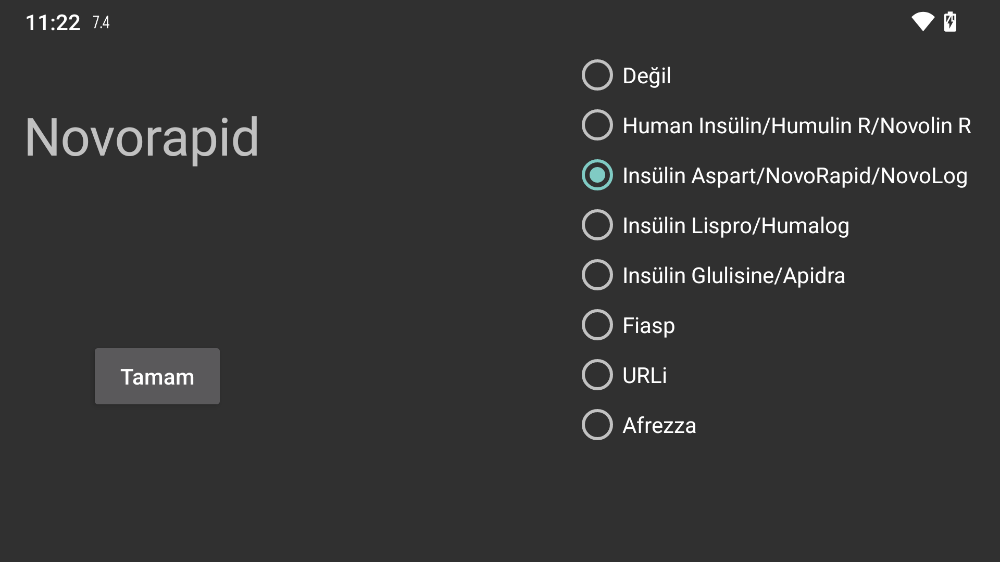
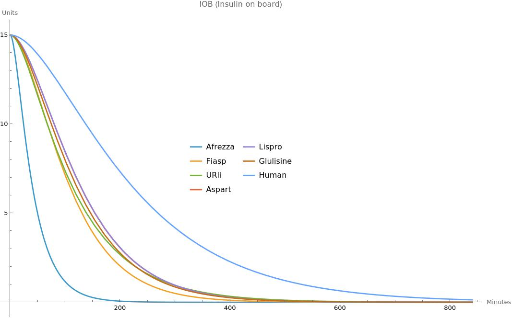

IOB, önceki insülin dozlarından ne kadar insülin kaldığını gösteren bir ölçüdür. Juggluco 9.2.0'dan önce, IOB'yi tahmin etmek için İnsülin Aspart'ın Kan İnsülin Konsantrasyonu eğrisi kullanılıyordu. Artık insülin türünü kendiniz belirleyebilirsiniz ve Juggluco o insülin türüne özgü bir Kan İnsülin Konsantrasyonu eğrisi kullanacaktır. Etiket hızlı etkili bir insülin anlamına gelmiyorsa Hayır'ı belirtin, aksi takdirde insülin türünü belirtin. Seçenekler:
Human Insulin/Humulin R/Novolin R
Insulin Aspart/NovoRapid/NovoLog
Insulin Lispro/Humalog
Insulin Glulisine/Apidra
Fiasp
URLi
Afrezza
IOB formüllerinin nasıl belirlendiği aşağıdaki web sayfasında açıklanmıştır: https://www.juggluco.nl/Juggluco/IOB/overview.html
Eğer kullandığınız hızlı etkili insülin listede yoksa bana e-posta gönderebilirsiniz.